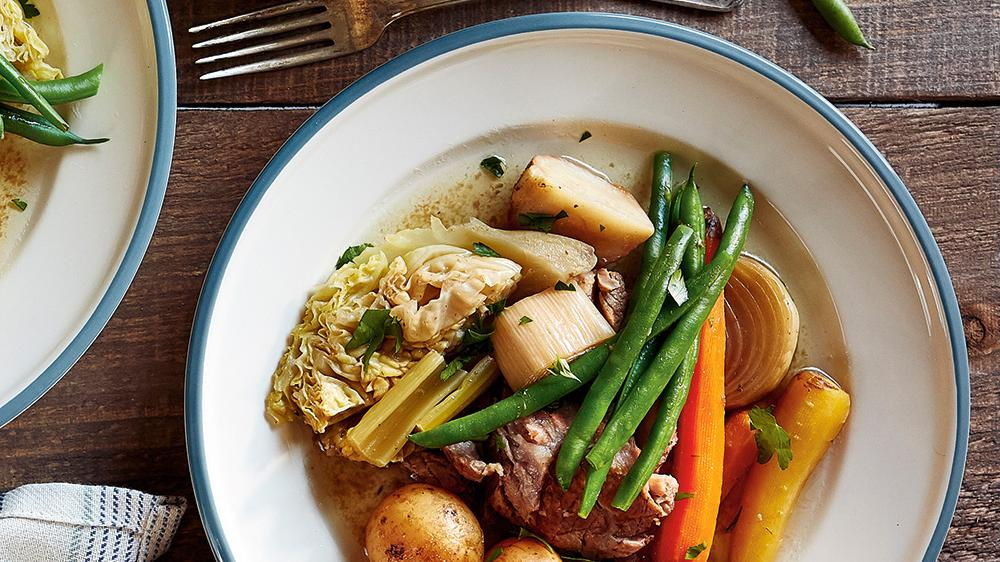

Pot-au-feu

Conseils de préparation
Etape 1 : Laver, éplucher tous les légumes, et les couper en morceaux assez gros.
Etape 2 : Piquer l'oignon entier avec les clous de girofle.
Etape 3 : Faire bouillir 3 litres d'eau, ajouter tous les légumes, puis le bouquet garni, l'ail, sel, poivre puis la viande.
Etape 4 : Faire cuire le tout pendant environ 2 h 30-3 h, écumer de temps en temps.
Etape 5 : 1 h avant la fin, ajouter les os à moelle, et mettre du gros sel aux extremités pour conserver la moelle.
Pour finir:Egoutter les légumes et la viande, et servir bien chaud avec de la moutarde.
Notre avis
Le bouillon obtenu est particulièrement savoureux, vous pouvez vous en servir pour faire une soupe à l'oignon, une soupe de vermicelles, ou tout simplement pour faire cuire des macaronis, c'est formidable. (Ne pas oublier de le passer) Certains ajoutent des pommes de terre, je vous conseille de les faire cuire à part, sinon elles troublent le bouillon.